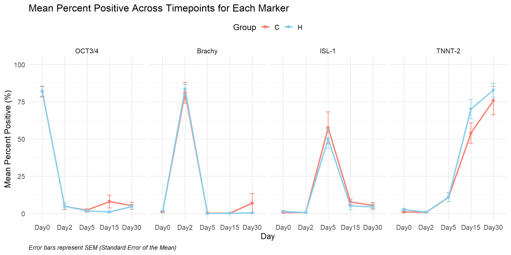
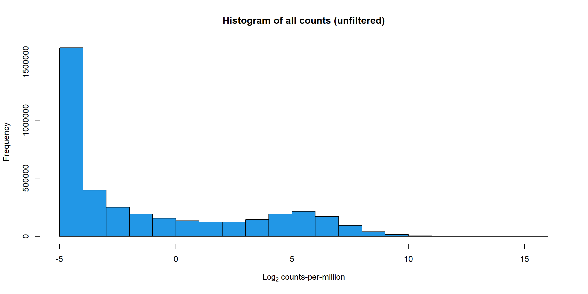
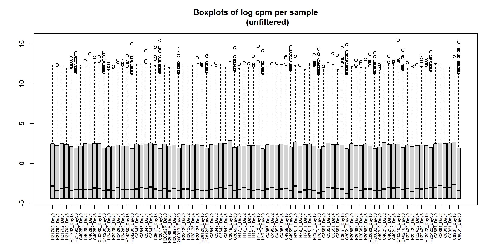
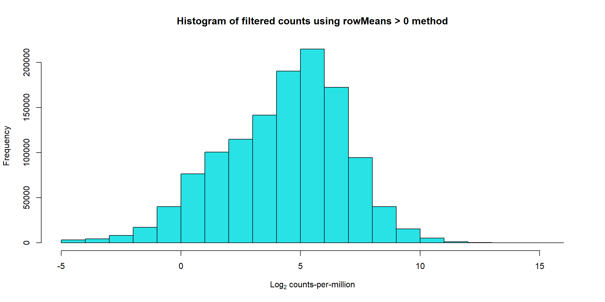
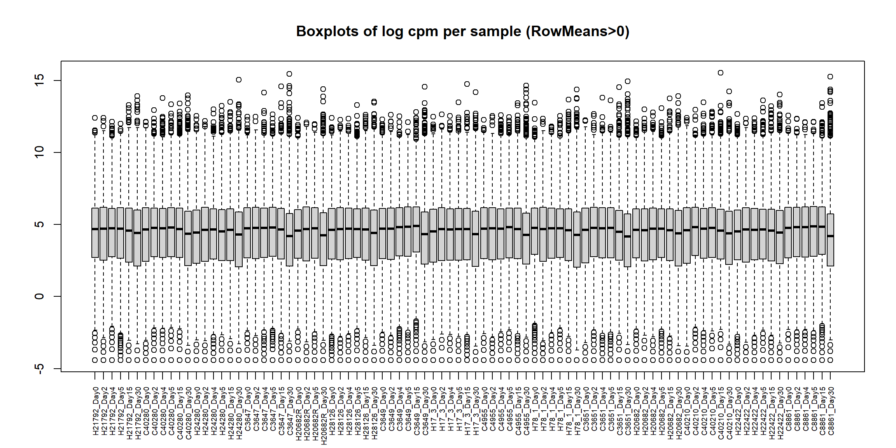
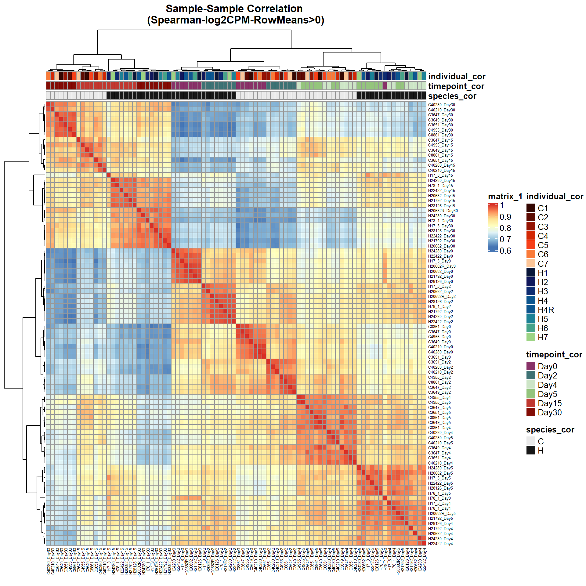
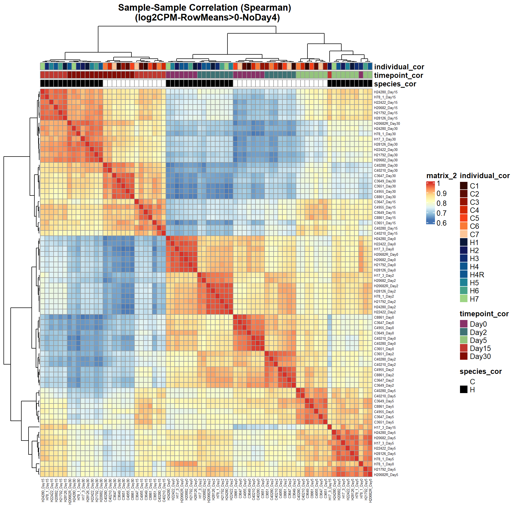

Last updated: 2026-02-18
Checks: 7 0
Knit directory: CrossSpecies_CM_Diff_RNA/
This reproducible R Markdown analysis was created with workflowr (version 1.7.2). The Checks tab describes the reproducibility checks that were applied when the results were created. The Past versions tab lists the development history.
Great! Since the R Markdown file has been committed to the Git repository, you know the exact version of the code that produced these results.
Great job! The global environment was empty. Objects defined in the global environment can affect the analysis in your R Markdown file in unknown ways. For reproduciblity it’s best to always run the code in an empty environment.
The command set.seed(20251129) was run prior to running
the code in the R Markdown file. Setting a seed ensures that any results
that rely on randomness, e.g. subsampling or permutations, are
reproducible.
Great job! Recording the operating system, R version, and package versions is critical for reproducibility.
Nice! There were no cached chunks for this analysis, so you can be confident that you successfully produced the results during this run.
Great job! Using relative paths to the files within your workflowr project makes it easier to run your code on other machines.
Great! You are using Git for version control. Tracking code development and connecting the code version to the results is critical for reproducibility.
The results in this page were generated with repository version c85837b. See the Past versions tab to see a history of the changes made to the R Markdown and HTML files.
Note that you need to be careful to ensure that all relevant files for
the analysis have been committed to Git prior to generating the results
(you can use wflow_publish or
wflow_git_commit). workflowr only checks the R Markdown
file, but you know if there are other scripts or data files that it
depends on. Below is the status of the Git repository when the results
were generated:
Ignored files:
Ignored: .Rhistory
Ignored: .Rproj.user/
Ignored: data/
Note that any generated files, e.g. HTML, png, CSS, etc., are not included in this status report because it is ok for generated content to have uncommitted changes.
These are the previous versions of the repository in which changes were
made to the R Markdown
(analysis/RNA_CorrelationHeatMap_Ensemble.Rmd) and HTML
(docs/RNA_CorrelationHeatMap_Ensemble.html) files. If
you’ve configured a remote Git repository (see
?wflow_git_remote), click on the hyperlinks in the table
below to view the files as they were in that past version.
| File | Version | Author | Date | Message |
|---|---|---|---|---|
| Rmd | c85837b | John D. Hurley | 2026-02-18 | SiteUpDate_CorrelationHeatMap |
| html | 7789dff | John D. Hurley | 2026-01-28 | Build site. |
| Rmd | 0fcf7c3 | John D. Hurley | 2026-01-28 | HeatMap knit update |
| html | d9f15a6 | John D. Hurley | 2026-01-28 | Build site. |
| Rmd | 19cd9fb | John D. Hurley | 2026-01-28 | Commenting out wokrflowr publish |
| Rmd | 3b54f65 | John D. Hurley | 2026-01-28 | Duplicate Code Labels |
| Rmd | de67e64 | John D. Hurley | 2026-01-28 | Commenting out code not in use. |
| Rmd | da444ed | John D. Hurley | 2026-01-28 | RMarkdown name update |
| Rmd | 085c1db | John D. Hurley | 2026-01-28 | Finalizing CorHeatMap |
h_samples_counts <- read.delim("~/diff_timeline_tes/RNA/Run1_Run2_Concat/featurecounts/h_samples_counts.txt", comment.char="#")
c_samples_counts <- read.delim("~/diff_timeline_tes/RNA/Run1_Run2_Concat/featurecounts/c_samples_counts.txt", comment.char="#")
RNA_joined_fc <- left_join(h_samples_counts,c_samples_counts, by = "Geneid")
#To keep only OrthoGenes and sample columns
RNA_fc <- RNA_joined_fc[ , !(names(RNA_joined_fc) %in% c("gene","Chr.x","Start.x","End.x","Strand.x","Length.x","Geneid.x","Chr.y","Start.y","End.y","Strand.y","Length.y","Geneid.y"))]
# 89 columns; 7 x 6 = 42 Human Exp, 7 x 6 = 42 Chimp Exp, 4 Human Replicate
RNA_fc <- RNA_fc %>%
column_to_rownames("Geneid")
# #Rename column Names to More Useful Info
col_names <- c("H28126_D0",
"H28126_D2",
"H28126_D4",
"H28126_D5",
"H28126_D15",
"H28126_D30",
"H17_D0",
"H17_D2",
"H17_D4",
"H17_D5",
"H17_D15",
"H17_D30",
"H78_D0",
"H78_D2",
"H78_D4",
"H78_D5",
"H78_D15",
"H78_D30",
"H20682_D0",
"H20682_D2",
"H20682_D4",
"H20682_D5",
"H20682_D15",
"H20682_D30",
"H22422_D0",
"H22422_D2",
"H22422_D4",
"H22422_D5",
"H22422_D15",
"H22422_D30",
"H21792_D0",
"H21792_D2",
"H21792_D4",
"H21792_D5",
"H21792_D15",
"H21792_D30",
"H24280_D0",
"H24280_D2",
"H24280_D4",
"H24280_D5",
"H24280_D15",
"H24280_D30",
"H20682R_D0",
"H20682R_D2",
"H20682R_D5",
"H20682R_D30",
"C3649_D0",
"C3649_D2",
"C3649_D4",
"C3649_D5",
"C3649_D15",
"C3649_D30",
"C4955_D0",
"C4955_D2",
"C4955_D4",
"C4955_D5",
"C4955_D15",
"C4955_D30",
"C3651_D0",
"C3651_D2",
"C3651_D4",
"C3651_D5",
"C3651_D15",
"C3651_D30",
"C40210_D0",
"C40210_D2",
"C40210_D4",
"C40210_D5",
"C40210_D15",
"C40210_D30",
"C8861_D0",
"C8861_D2",
"C8861_D4",
"C8861_D5",
"C8861_D15",
"C8861_D30",
"C40280_D0",
"C40280_D2",
"C40280_D4",
"C40280_D5",
"C40280_D15",
"C40280_D30",
"C3647_D0",
"C3647_D2",
"C3647_D4",
"C3647_D5",
"C3647_D15",
"C3647_D30"
)
colnames(RNA_fc) <- col_names
dim(RNA_fc)
ensembl_ids_unfilt <- rownames(RNA_fc)
entrez_ids_unfilt <- mapIds(org.Hs.eg.db,
keys = ensembl_ids_unfilt,
column = "ENTREZID",
keytype = "ENSEMBL",
multiVals = "first")
symbol_ids_unfilt <- mapIds(org.Hs.eg.db,
keys = ensembl_ids_unfilt,
column = "SYMBOL",
keytype = "ENSEMBL",
multiVals = "first")
RNA_fc_df <- as.data.frame(RNA_fc)
RNA_fc_df <- RNA_fc_df %>%
rownames_to_column(var = "Ensemble") %>%
dplyr::mutate(
Entrez_ID = entrez_ids_unfilt,
Symbol = symbol_ids_unfilt
) %>%
dplyr::select(
Ensemble, # 1st column
Entrez_ID, # 2nd column
Symbol, # 3rd column
everything() # rest unchanged
)
# saveRDS(RNA_fc_df,"data/Raw_Data/RNA_fc_df.RDS")
RNA_Metadata <- read_excel("~/diff_timeline_tes/RNA/RNA_Metadata.xlsx")
# saveRDS(RNA_Metadata,"data/Raw_Data/RNA_Metadata.RDS")# -----------------------------
# 1. Prepare long-format data
# -----------------------------
day_levels <- c("Day0","Day2","Day4","Day5","Day15","Day30")
marker_levels <- c("OCT3/4", "Brachy", "ISL-1", "TNNT-2")
df_long_all <- RNA_Metadata_NoD4_NoRep %>%
dplyr::select(Cond, `OCT3/4`, Brachy, `ISL-1`, `TNNT-2`) %>%
mutate(
`OCT3/4` = as.numeric(`OCT3/4`),
Brachy = as.numeric(Brachy),
`ISL-1` = as.numeric(`ISL-1`),
`TNNT-2` = as.numeric(`TNNT-2`),
Group = ifelse(grepl("^H_", Cond), "H", "C")
) %>%
pivot_longer(
cols = c(`OCT3/4`, Brachy, `ISL-1`, `TNNT-2`),
names_to = "Marker",
values_to = "Percent_Positive"
) %>%
mutate(
Day = gsub(".*_(Day\\d+)$", "\\1", Cond),
Day = factor(Day, levels = day_levels, ordered = TRUE),
Marker = factor(Marker, levels = marker_levels, ordered = TRUE)
)
# -----------------------------
# 2. Compute summary with SEM
# -----------------------------
summary_df <- df_long_all %>%
group_by(Marker, Day, Group) %>%
summarise(
Mean = mean(Percent_Positive, na.rm = TRUE),
SD = sd(Percent_Positive, na.rm = TRUE),
N = sum(!is.na(Percent_Positive)),
SEM = SD / sqrt(N),
.groups = "drop"
)# -----------------------------
# 3. Plot lines over time with SEM error bars
# -----------------------------
ggplot(summary_df, aes(x = Day, y = Mean, color = Group, group = Group)) +
geom_line(linewidth = 1.1) +
geom_point(size = 2) +
geom_errorbar(
aes(ymin = Mean - SEM, ymax = Mean + SEM),
width = 0.2
) +
facet_wrap(~ Marker, nrow = 1) +
scale_color_manual(values = c("H" = "skyblue", "C" = "salmon")) +
scale_y_continuous(limits = c(0, 100)) +
labs(
title = "Mean Percent Positive Across Timepoints for Each Marker",
x = "Day",
y = "Mean Percent Positive (%)",
caption = "Error bars represent SEM (Standard Error of the Mean)"
) +
theme_minimal(base_size = 14) +
theme(
legend.position = "top",
axis.text.x = element_text(angle = 0, hjust = 0.5),
plot.caption = element_text(hjust = 0, face = "italic", size = 10)
)
#####Unfiltered####
RNA_fc <- RNA_fc_df %>%
dplyr::select(c(-"Entrez_ID", -"Symbol")) %>%
column_to_rownames("Ensemble")
# saveRDS(RNA_fc,"data/QC/RNA_fc.RDS")
RNA_log2cpm <- cpm(RNA_fc,log=TRUE)
hist(RNA_log2cpm, main = "Histogram of all counts (unfiltered)",
xlab =expression("Log"[2]*" counts-per-million"), col =4 )
boxplot(RNA_log2cpm, main = "Boxplots of log cpm per sample
(unfiltered)", xaxt = "n", xlab= "")
axis(1,
at = 1:length(col_names), # positions (one per sample)
labels = col_names, # your labels vector
las = 2, # rotate text vertically (like srt=90)
cex.axis = 0.6) # shrink label size
# saveRDS(RNA_log2cpm,"data/QC/RNA_log2cpm.RDS")#####RowMu>0####
row_means <- rowMeans(RNA_log2cpm)
Filt_RMG0_RNA_fc <- RNA_fc[row_means >0,]
# saveRDS(Filt_RMG0_RNA_fc,"data/QC/Filt_RMG0_RNA_fc.RDS")
Filt_RMG0_RNA_log2cpm <- cpm(Filt_RMG0_RNA_fc,log=TRUE)
# saveRDS(Filt_RMG0_RNA_log2cpm,"data/QC/RNA_log2cpm_RMG0.RDS")
hist(Filt_RMG0_RNA_log2cpm, main = "Histogram of filtered counts using rowMeans > 0 method",
xlab =expression("Log"[2]*" counts-per-million"), col =5 )
boxplot(Filt_RMG0_RNA_log2cpm, main = "Boxplots of log cpm per sample (RowMeans>0)",xaxt = "n", xlab= "")
axis(1,
at = 1:length(col_names), # positions (one per sample)
labels = col_names, # your labels vector
las = 2, # rotate text vertically (like srt=90)
cex.axis = 0.3) # shrink label size
######Cor_HeatMap####
Cor_Filt_RMG0_RNA_log2cpm <- cor(Filt_RMG0_RNA_log2cpm, method = "spearman")
individual <- RNA_Metadata$Individual_Label
species <- RNA_Metadata$Species
timepoint <- RNA_Metadata$Timepoint
timepoint <- factor(timepoint,levels = c("Day0","Day2","Day4","Day5","Day15","Day30"))
Cor_metadata <- data.frame(
sample_cor = colnames(Filt_RMG0_RNA_log2cpm),
species_cor = species,
timepoint_cor = timepoint,
individual_cor = individual
)
ann_colors <- list(
timepoint_cor = c(
"Day0" = "#883268", # Purple
"Day2" = "#3E7274", # blue
"Day4" = "#5AAA464D", # light green
"Day5" = "#94C47D", # Green
"Day15" = "#C03830", # red
"Day30" = "#830C05" # dark red
),
species_cor = c(
"H" = "#171717", # black
"C" = "#17171717" # light grey
),
individual_cor = c(
H1 = "#091638", #Blue-Green Darkest
H2 = "#11185B",
H3 = "#0F2C71",
H4 = "#0D568F",
H4R = "#0D568F",
H5 = "#1D8296",
H6 = "#46A389",
H7 = "#9DD484", #Blue-Green Lightest
C1 = "#340702", #Brown-Orange darkest
C2 = "#5D0B02",
C3 = "#951302",
C4 = "#D32804",
C5 = "#F74019",
C6 = "#FA7A38",
C7 = "#FCC598"
)
)
rownames(Cor_metadata) <- Cor_metadata$sample_cor
# saveRDS(Cor_Filt_RMG0_RNA_log2cpm, "data/QC/Cor_Filt_RMG0_RNA_log2cpm.RDS")
# saveRDS(Cor_metadata, "data/QC/Cor_RNA_metadata.RDS")
# saveRDS(ann_colors,"data/QC/ann_colors.RDS")print(
pheatmap(Cor_Filt_RMG0_RNA_log2cpm,
fontsize_row = 5,
fontsize_col = 5,
annotation_col = Cor_metadata[, c("species_cor", "timepoint_cor","individual_cor")],
annotation_colors = ann_colors,
clustering_distance_rows = "correlation",
clustering_distance_cols = "correlation",
main = "Sample-Sample Correlation \n(Spearman-log2CPM-RowMeans>0)")
)
####Subset####
RNA_Metadata_No4 <- RNA_Metadata %>%
filter(Timepoint != "Day4")
RNA_fc_NoD4 <- RNA_fc %>%
dplyr::select(-ends_with("_D4"))
RNA_log2cpm_NoD4 <- cpm(RNA_fc_NoD4,log=TRUE)
dim(RNA_log2cpm_NoD4)[1] 44125 74dim(RNA_fc)[1] 44125 88row_means_NoD4 <- rowMeans(RNA_log2cpm_NoD4)
Filt_RMG0_RNA_fc_NoD4 <- RNA_fc_NoD4[row_means_NoD4 >0,]
dim(Filt_RMG0_RNA_fc_NoD4)[1] 14838 74Filt_RMG0_RNA_log2cpm_NoD4 <- cpm(Filt_RMG0_RNA_fc_NoD4,log=TRUE)
# saveRDS(RNA_Metadata_No4,"data/QC/RNA_Metatdata_No4.RDS")
# saveRDS(Filt_RMG0_RNA_fc_NoD4,"data/QC/Filt_RMG0_RNA_fc_NoD4.RDS")
# saveRDS(Filt_RMG0_RNA_log2cpm_NoD4, "data/QC/Filt_RMG0_RNA_log2cpm_NoD4.RDS")######Cor_HeatMap####
Cor_Filt_RMG0_RNA_log2cpm_NoD4 <- cor(Filt_RMG0_RNA_log2cpm_NoD4, method = "spearman")
Cor_metadata_No4 <- Cor_metadata %>%
dplyr::filter(timepoint_cor !="Day4")
ann_colors_No4 <- ann_colors
ann_colors_No4$timepoint_cor <- ann_colors$timepoint_cor[
names(ann_colors$timepoint_cor) != "Day4"
]
# saveRDS(Cor_metadata_No4, "data/QC/Cor_metadata_No4.RDS")
# saveRDS(Cor_Filt_RMG0_RNA_log2cpm_NoD4, "data/QC/Cor_Filt_RMG0_RNA_log2cpm_NoD4.RDS")
# saveRDS(ann_colors_No4,"data/QC/ann_colors_no4.RDS")print(
pheatmap(Cor_Filt_RMG0_RNA_log2cpm_NoD4,
fontsize_row = 5,
fontsize_col = 5,
annotation_col = Cor_metadata_No4[, c("species_cor", "timepoint_cor","individual_cor")],
annotation_colors = ann_colors_No4,
clustering_distance_rows = "correlation",
clustering_distance_cols = "correlation",
main = "Sample-Sample Correlation (Spearman) \n (log2CPM-RowMeans>0-NoDay4)")
)
# git -> commit all changes
# git -> push
# wflow_publish("analysis/RNA_CorrelationHeatMap_Ensemble.Rmd")
sessionInfo()R version 4.5.1 (2025-06-13 ucrt)
Platform: x86_64-w64-mingw32/x64
Running under: Windows 11 x64 (build 26100)
Matrix products: default
LAPACK version 3.12.1
locale:
[1] LC_COLLATE=English_United States.utf8
[2] LC_CTYPE=English_United States.utf8
[3] LC_MONETARY=English_United States.utf8
[4] LC_NUMERIC=C
[5] LC_TIME=English_United States.utf8
time zone: America/Chicago
tzcode source: internal
attached base packages:
[1] grid stats4 stats graphics grDevices utils datasets
[8] methods base
other attached packages:
[1] ComplexHeatmap_2.24.1 ggfortify_0.4.19
[3] readxl_1.4.5 RUVSeq_1.42.0
[5] EDASeq_2.42.0 ShortRead_1.66.0
[7] GenomicAlignments_1.44.0 SummarizedExperiment_1.38.1
[9] MatrixGenerics_1.20.0 matrixStats_1.5.0
[11] Rsamtools_2.24.0 GenomicRanges_1.60.0
[13] Biostrings_2.76.0 GenomeInfoDb_1.44.3
[15] XVector_0.48.0 BiocParallel_1.42.1
[17] lubridate_1.9.5 forcats_1.0.1
[19] stringr_1.6.0 purrr_1.2.1
[21] tidyr_1.3.2 tidyverse_2.0.0
[23] Cormotif_1.54.0 affy_1.86.0
[25] pheatmap_1.0.13 org.Hs.eg.db_3.21.0
[27] AnnotationDbi_1.70.0 IRanges_2.42.0
[29] S4Vectors_0.46.0 Biobase_2.68.0
[31] BiocGenerics_0.54.1 generics_0.1.4
[33] readr_2.1.6 ggrepel_0.9.6
[35] dplyr_1.1.4 tibble_3.3.1
[37] ggplot2_4.0.2 edgeR_4.6.3
[39] limma_3.64.3 workflowr_1.7.2
loaded via a namespace (and not attached):
[1] later_1.4.5 BiocIO_1.18.0 bitops_1.0-9
[4] filelock_1.0.3 R.oo_1.27.1 cellranger_1.1.0
[7] preprocessCore_1.70.0 XML_3.99-0.20 lifecycle_1.0.5
[10] httr2_1.2.2 pwalign_1.4.0 doParallel_1.0.17
[13] rprojroot_2.1.1 processx_3.8.6 lattice_0.22-7
[16] MASS_7.3-65 magrittr_2.0.4 sass_0.4.10
[19] rmarkdown_2.30 jquerylib_0.1.4 yaml_2.3.12
[22] httpuv_1.6.16 otel_0.2.0 DBI_1.2.3
[25] RColorBrewer_1.1-3 abind_1.4-8 R.utils_2.13.0
[28] RCurl_1.98-1.17 rappdirs_0.3.4 git2r_0.36.2
[31] circlize_0.4.17 GenomeInfoDbData_1.2.14 codetools_0.2-20
[34] DelayedArray_0.34.1 xml2_1.5.2 tidyselect_1.2.1
[37] shape_1.4.6.1 UCSC.utils_1.4.0 farver_2.1.2
[40] BiocFileCache_2.16.2 jsonlite_2.0.0 GetoptLong_1.1.0
[43] iterators_1.0.14 foreach_1.5.2 tools_4.5.1
[46] progress_1.2.3 Rcpp_1.1.1 glue_1.8.0
[49] gridExtra_2.3 SparseArray_1.8.1 xfun_0.56
[52] withr_3.0.2 BiocManager_1.30.27 fastmap_1.2.0
[55] latticeExtra_0.6-31 callr_3.7.6 digest_0.6.39
[58] timechange_0.4.0 R6_2.6.1 colorspace_2.1-2
[61] Cairo_1.7-0 jpeg_0.1-11 biomaRt_2.64.0
[64] RSQLite_2.4.5 R.methodsS3_1.8.2 rtracklayer_1.68.0
[67] prettyunits_1.2.0 httr_1.4.7 S4Arrays_1.8.1
[70] whisker_0.4.1 pkgconfig_2.0.3 gtable_0.3.6
[73] blob_1.3.0 S7_0.2.1 hwriter_1.3.2.1
[76] htmltools_0.5.9 clue_0.3-66 scales_1.4.0
[79] png_0.1-8 knitr_1.51 rstudioapi_0.18.0
[82] tzdb_0.5.0 rjson_0.2.23 curl_7.0.0
[85] cachem_1.1.0 GlobalOptions_0.1.3 parallel_4.5.1
[88] restfulr_0.0.16 pillar_1.11.1 vctrs_0.7.1
[91] promises_1.5.0 dbplyr_2.5.1 cluster_2.1.8.1
[94] evaluate_1.0.5 GenomicFeatures_1.60.0 cli_3.6.5
[97] locfit_1.5-9.12 compiler_4.5.1 rlang_1.1.7
[100] crayon_1.5.3 labeling_0.4.3 interp_1.1-6
[103] aroma.light_3.38.0 ps_1.9.1 getPass_0.2-4
[106] fs_1.6.6 stringi_1.8.7 deldir_2.0-4
[109] Matrix_1.7-4 hms_1.1.4 bit64_4.6.0-1
[112] KEGGREST_1.48.1 statmod_1.5.1 memoise_2.0.1
[115] affyio_1.78.0 bslib_0.10.0 bit_4.6.0